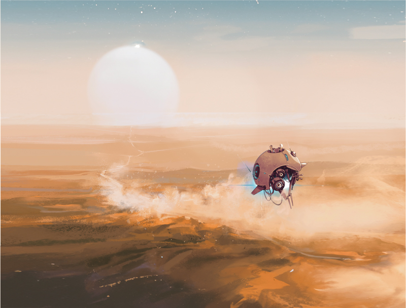

Nous adorons nos joueurs ainsi que leurs idées géniales. Nous soutenons les joueurs qui utilisent notre propriété intellectuelle (« PI ») pour créer des projets fans gratuits au profit de la communauté (les « Projets »). Nous acceptons généralement les Projets qui respectent les règles décrites ci-après, mais pouvons décider à tout moment d'y mettre fin si nous jugeons que ces règles ont été mal interprétées ou qu'il est fait un usage inapproprié de notre PI.
En bref : des contenus gratuits dont la communauté pourra profiter, à quelques exceptions près.
Unkind Games (« Unkind » ou « Nous ») vous concédons une licence individuelle, non exclusive, non licenciable, non transférable, révocable et limitée d'utiliser, de présenter et de créer des produits dérivés qui reposent sur la PI de Unkind, à des fins communautaires strictement non commerciales (sauf indication spécifique ci-dessous), sous réserve respect le plus strict de l'ensemble des règles décrites dans la présente politique (les « Règles ») et des Conditions d'utilisation. Nous nous réservons le droit de refuser à tout moment à quiconque l'usage de notre PI, qu'il y ait un motif quelconque ou non, notamment lorsque nous jugeons, à notre seule discrétion, que l'utilisation que vous faites de notre PI est inappropriée. Si nous vous refusons le droit d'utiliser notre PI, vous devez cesser de développer, publier ou distribuer votre Projet sans délai.
En bref : nous autorisons les revenus passifs générés grâce à la publicité de certains contenus, abonnements et dons sur les chaînes de streaming ainsi que certains projets commerciaux conformes aux conditions et politiques API utilisant une clé API en cours de validité.
Vous ne pouvez pas créer de Projets commerciaux sans contrat de licence écrit de notre part, notamment de projets dont une quelconque part de financement est externalisée, impliquant une entreprise ou personne morale ou usant d'un péage informatique ou paywall pour autoriser l'accès aux contenus (p. ex. Patron, YouTube, Premium, etc.).